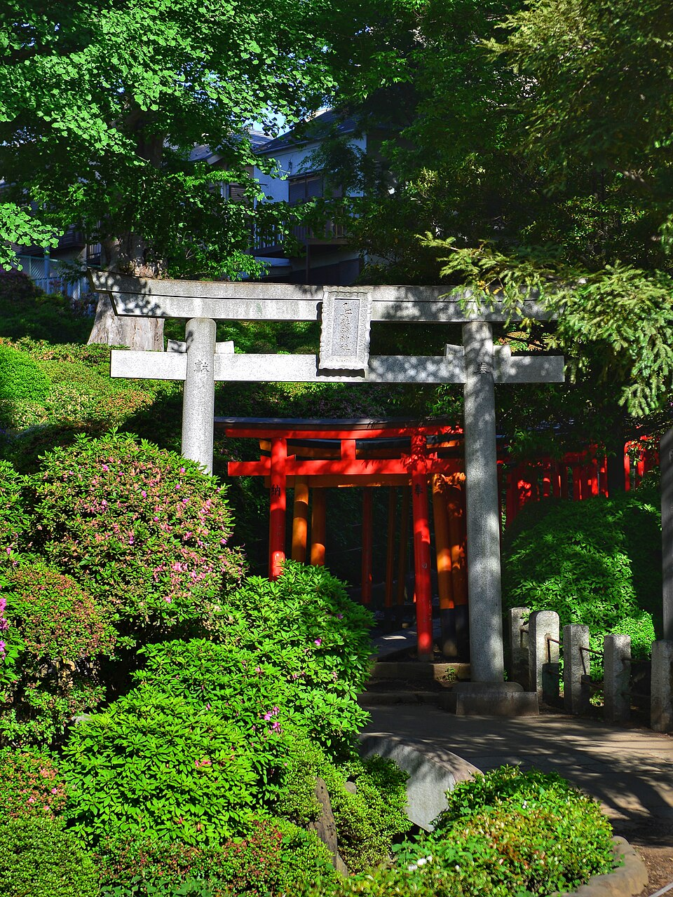
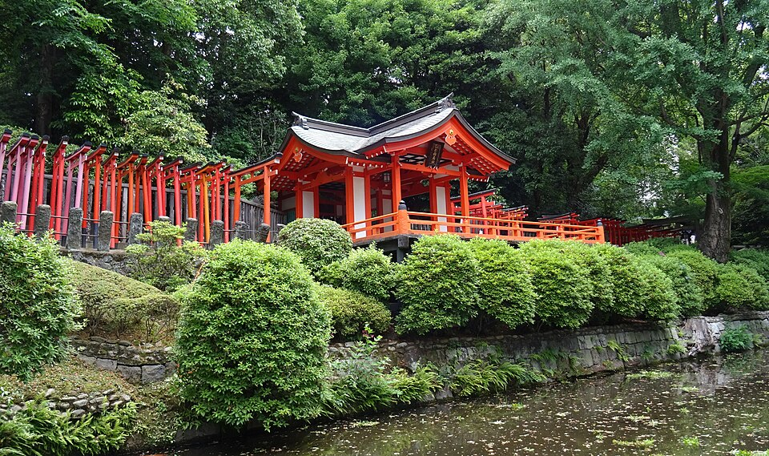

Yanaka: старый Tokyo и закат на лестнице

.jpg){kind=link}

.jpg){kind=link}






Yanaka вместе с соседними Nezu и Sendagi называют «Yanesen». Это один из немногих районов Tokyo, где сохранилась атмосфера старого города (shitamachi): деревянные дома, маленькие лавки (в Yanaka их около 70), храмы.
Кладбище Yanaka
Большое тихое кладбище (около 10 га, ~7 000 могил) между Ueno и Yanaka. Главная аллея весной вся в сакуре. Через него удобно идти из парка Ueno к Yanaka Ginza.
Yanaka Ginza
Торговая улица с 1950-х годов, около 60 лавок и закусочных. Внесена в «30 памятных видов района Taito».
Лестница Yuyake Dandan («ступени заката»)
Каменная лестница в начале Yanaka Ginza со стороны станции Nippori: 36 ступеней, перепад 4 м. Имя ей в 1990 году дала писательница Mori Mayumi. Сверху видно улицу и закат. Сегодня закат в 17:08.
По желанию: святилище Nezu
Аллея из красных ворот torii, ~15 мин пешком к западу от Yanaka Ginza. Часы работы я не нашёл, лучше идти до 17:00.
Домой
Станция Nippori: JR Keihin-Tohoku или Yamanote, 4 остановки (Uguisudani, Ueno, Okachimachi, Akihabara), 8 мин, 199 ¥.